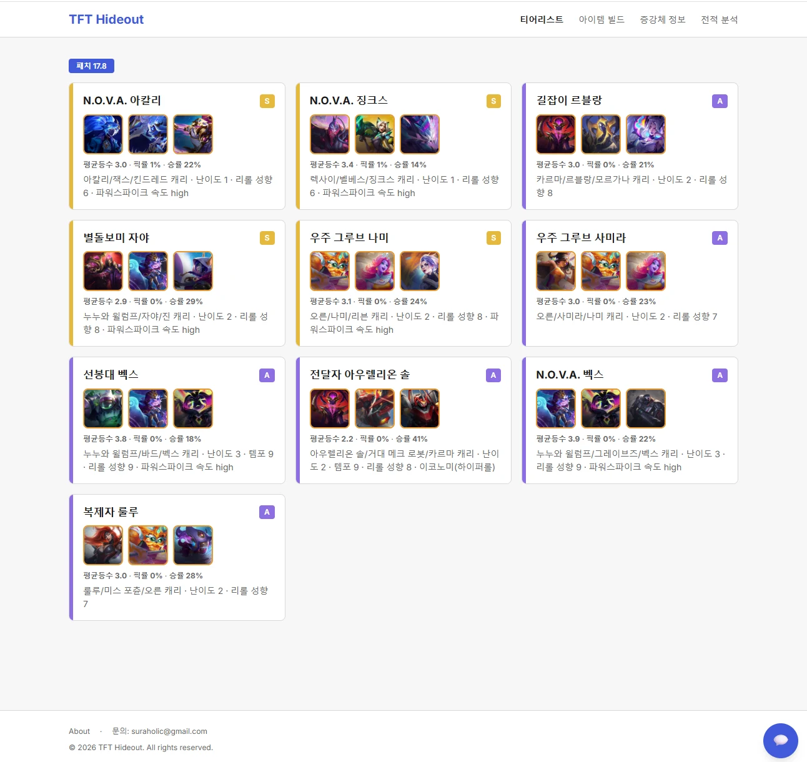
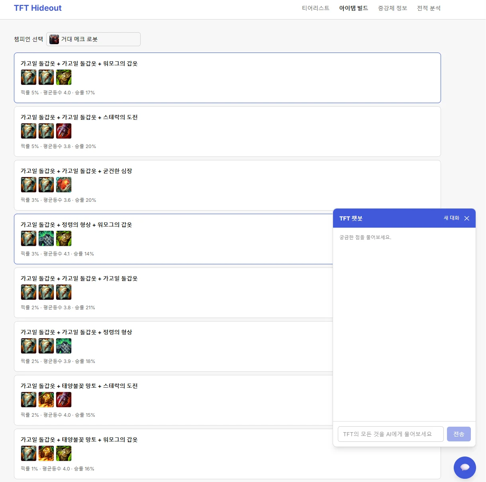
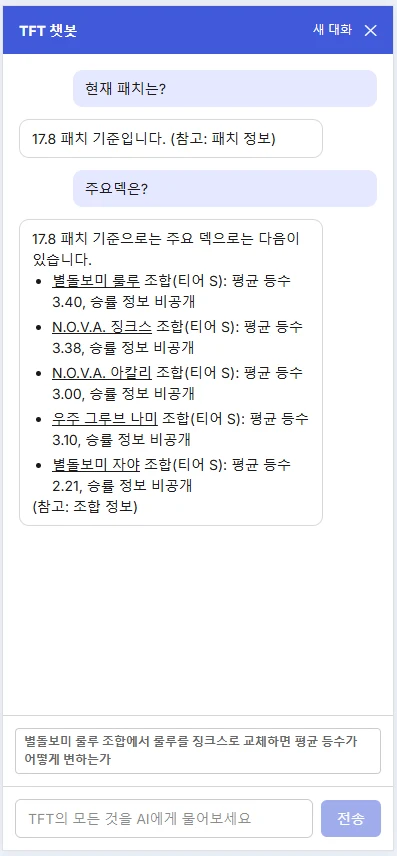
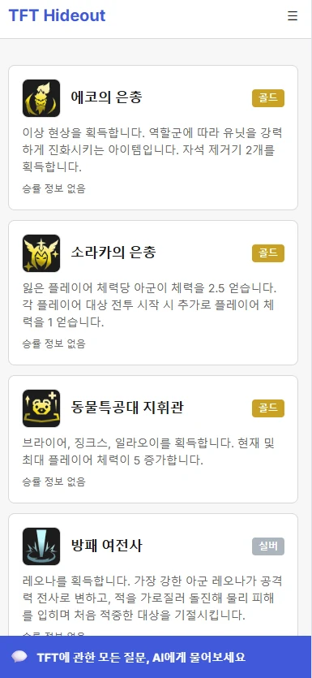
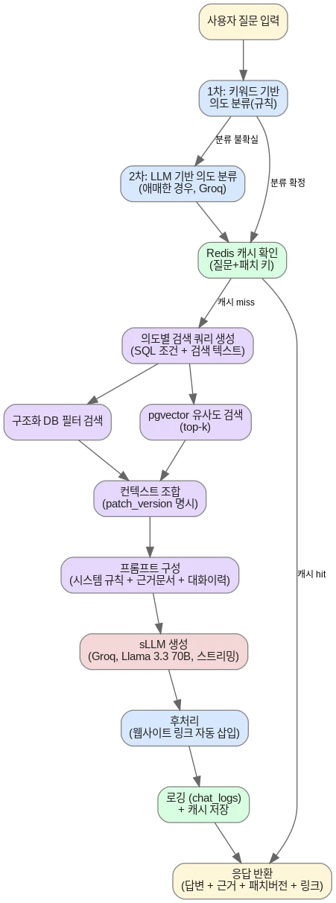
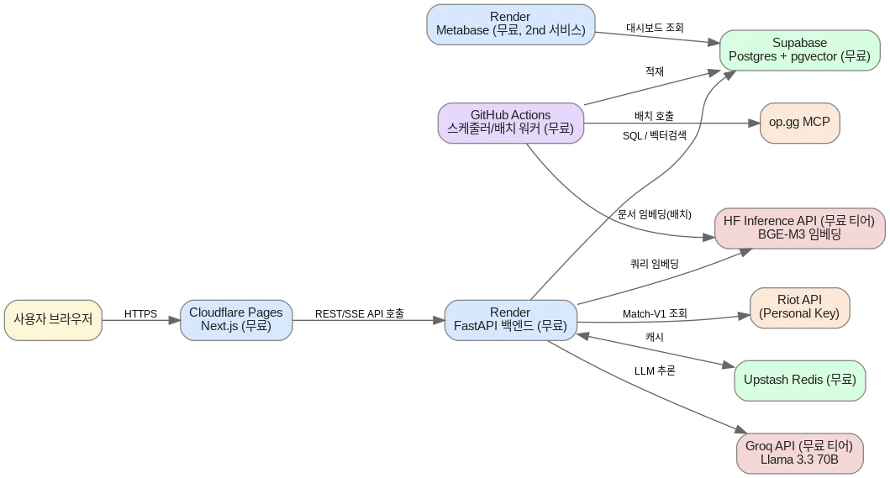

AI 개인 프로젝트
TFT Hideout
게임 데이터를 탐색과 대화로 제공하는 RAG 기반 AI 서비스
프로젝트 개요
TFT(전략적 팀 전투)의 게임 메타 정보는 패치에 따라 지속적으로 변경되며, 필요한 정보를 확인하려면 여러 웹사이트와 커뮤니티를 탐색해야 합니다.
TFT Hideout은 조합, 아이템, 증강체 등 게임 데이터를 하나의 구조로 정리하고, 웹 탐색과 AI 챗봇을 통해 제공하는 서비스입니다.
본인과 소규모 지인 사용을 대상으로 제품 범위를 정의하고, Claude Code와 협업해 기획부터 구현·검증까지 진행했습니다.
핵심 과제 01
탐색형 서비스와 대화형 서비스의 결합
사용자가 원하는 정보를 확인하는 방식은 크게 두 가지로 구분했습니다.
직접 탐색하는 방식
답변을 받는 방식
두 기능이 동일한 데이터 기반을 활용하도록 설계하여 웹 탐색과 챗봇 응답 사이의 일관성을 확보하고자 했습니다.
관련 화면 · Browse


관련 화면 · 모바일 (Ask · Browse)


핵심 과제 02
AI 응답의 신뢰성 설계
AI 챗봇은 자연스러운 문장을 생성할 수 있지만, 그 내용이 항상 정확한 것은 아닙니다.
특히 패치에 따라 변경되는 게임 데이터에서는 오래되거나 잘못된 정보를 제공할 위험이 있습니다.
이에 내부 데이터를 검색해 답변에 활용하는 RAG 구조를 설계하고, 질문 유형에 따라 검색 범위를 구분했습니다.
또한 정책상 노출해서는 안 되는 데이터가 응답에 포함되지 않도록 전처리와 후처리 규칙을 적용했습니다.

핵심 과제 03
제한된 비용에서의 기술적 의사결정
개인·비상업 프로젝트라는 특성을 고려해 무료 인프라를 중심으로 시스템을 구성했습니다.
- Redis 캐시→PostgreSQL 기반 캐시
- 외부 분석 도구 (메모리 제약)→자체 KPI 페이지
초기 설계에서 계획했던 Redis 캐시는 PostgreSQL 기반 캐시로 대체했고, 메모리 제약으로 사용할 수 없었던 외부 분석 도구 대신 자체 KPI 페이지를 구현했습니다.
이 과정에서 기술적 제약을 확인하고 설계 문서와 개발 작업에 변경 사항을 반영했습니다.
관련 산출물

핵심 과제 04
AI 협업을 위한 프로젝트 관리
PRD, 개발설계서, 화면설계서, 디자인가이드, WBS를 구분해 관리했습니다.
여러 AI 개발 세션에서 동일한 요구사항을 유지하기 위해 확정된 원본 문서와 참조용 요약 문서를 분리했습니다.
작업을 TASK 단위로 나누고, 구현·테스트·검토·승인 과정을 거쳐 진행 상태를 갱신하는 방식으로 관리했습니다.
- PRD TFT_sLLM_PRD_v1.3_최종 › 제품 요구사항, 사용자 플로우, Legend 승률 비노출 등 정책 근거(10·12장).
- 개발설계서 TFT_sLLM_개발설계서_v1.7 › 아키텍처·DB 스키마(ERD)·API 명세·RAG 파이프라인 설계(4.4장).
- 진행현황 진행현황 › 109 TASK(취소 3 포함, 활성 106) 단위 분해, TASK별 테스트 요구사항 컬럼 포함.
※ 위 설계 문서들은 사후에 정리한 산출물이 아니라, Claude Code와 세션마다 대화하며 실제로 갱신해 온 원문입니다 — PRD는 v1.3, 개발설계서는 Redis 제거 등 인프라 변경을 반영해 v1.7까지 개정되었습니다.
결과 및 진행 상태
구현 완료
후속 작업
회고
AI 기반 제품에서는 기능이 정상적으로 실행되는 것과 올바른 답변을 제공하는 것이 서로 다른 문제입니다.
특히 검색 데이터의 품질, 응답 범위, 정책 위반 가능성을 기획 단계에서 고려해야 한다는 점을 경험했습니다.
또한 AI 개발 도구와의 협업에서는 상세한 지시보다 일관된 요구사항과 검증 절차를 유지하는 것이 중요하다는 점을 배웠습니다.